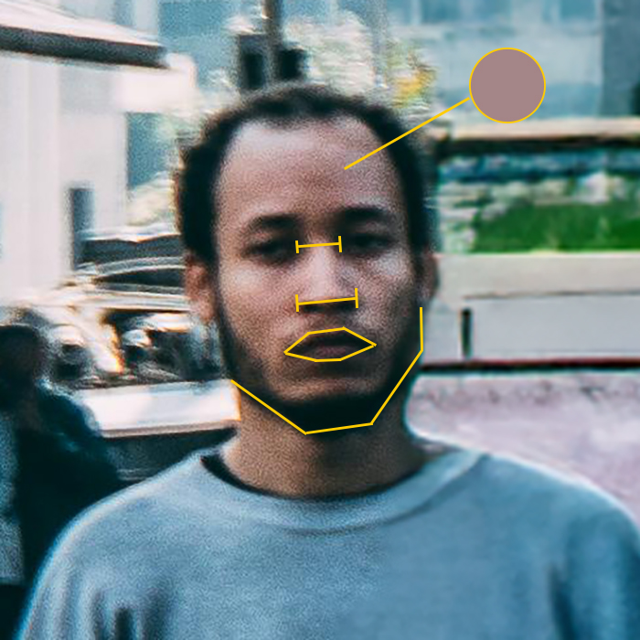
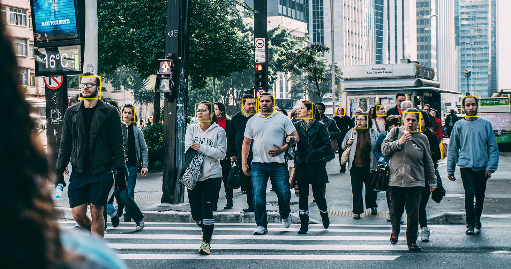

Contemporary
Future
Did you know
that the average person
in the United States is caught on
CCTV security cameras
around 70 times a day?
However, Modern surveillance doesn't really see... you

This is because facial recognition AI doesn't see faces the way we do.
It breaks a face down into numerical patterns: distances between eyes, nose width, mouth shape, jawline angles, skin "brightness" patterns, etc. Then it searches its database for faces that are "mathematically similar".
However, facial recognition is trained on databases that are are often majority white, majority male, and majority young. This, only produces biased outcomes—misidentifying Black and Brown faces more often.
These are just some of the lives harmed by surveillance systems built on racism and systemic injustice.
Robert Williams
2020
He was arrested for shoplifting in front of his family—he was nowhere near the store at the time of the theft.
Read MoreRandal Quran Reid
2022
While living in Georgia, facial recognition linked him to a crime in Louisiana—a state he's never even been to. He spent 6 Days in jail, before the charges were dropped.
Read MorePorcha Woodruff
2023
Wrongfully arrested for robbery and carjacking, at 8 months pregnant.
Read MoreHarvey Eugene Murphy Jr.
2023
The Black 61-year-old was arrested for an armed robbery he did not commit—he was 2000 miles away. During his 10 days in jail, he was brutally beaten and gang-raped by three inmates.
Read MoreRight now,
Facial Recognition Software
is Being Abused by the Government,
to Surveil Protests & Track Immigrants
So, what would
Abolitionist
CCTV look like?
In a future where consent is prioritized, public spaces use cameras that blur faces by default—a concept already being explored today.
The European Data Protection Board (EDPB) now encourages CCTV operators to blur faces, warning that failure to do so may violate the EU's General Data Protection Regulation (GDPR). This regulation strictly limits how personal data — including biometric data like facial images — can be collected and used without consent.
The consequences? Hefty fines, lawsuits, and growing pressure to redesign surveillance for privacy.

Sources
Calabrese, Julianna. “Why Organizations Use Face Blurring Software for CCTV.” Sighthound Redactor, 20 July 2022, www.redactor.com/blog/why-do-organizations-need-face-blurring-software-for-cctv.
Fergus, Rachel. “Biased Technology: The Automated Discrimination of Facial Recognition.” ACLU of Minnesota, 29 Feb 2024, https://www.aclu-mn.org/en/news/biased-technology-automated-discrimination-facial-recognition
Goode, Lauren; et al. “How Americans Are Surveilled During Protests.” Wired, 17 April 2025, https://www.wired.com/story/uncanny-valley-podcast-how-americans-are-surveilled-during-protests/.
Kelly, Makena and Elliot, Vittoria. “DOGE Is Building a Master Database to Surveil and Track Immigrants.” Wired, 18 April 2025, https://www.wired.com/story/doge-collecting-immigrant-data-surveil-track/
All Accessed 25 April 2025.
Facial Recognition isn’t Broken — Surveillance is.
Surveillance has never been neutral, and the harm it causes isn’t accidental.
Today, the U.S. is not centered around dignity, consent, or community.
But technology is evolving — and the tools we build can protect rather than punish.
We can design systems that see people as human, not just data points.